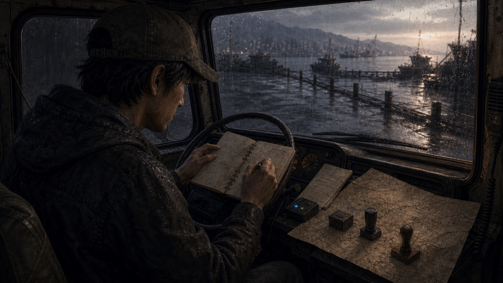

남산의 강제 이송을
멈춘다
사람의 확인 없이는 누구도 보내지 못하게.
- 이송표
- 누가 명령을 보냈는지
- 검증키
- 안전하게 꺼낼 방법
- 증언
- 같은 표를 받은 사람들
부산의 길 화면으로
여기까지가 초안의 동작 예시야. 실제 게임과 저장은 바뀌지 않았어.
게임에서는 이 안내를 닫고 목적지를 살펴볼 수 있어. 달구지가 자동으로 출발하지는 않아.
초안으로 돌아가기게임에 미적용인 첫 임무 화면 초안입니다. 기존 그림과 이야기만 재구성했고, 현재 플레이와 저장에는 연결하지 않았습니다.
제목·자동 읽기·기록 도구줄을 덜고, 목적 한 문장과 찾아야 할 것 세 줄을 남겼습니다. 길로 나가기는 자동 출발이 아니라 부산의 길 화면으로 돌아가는 행동입니다.
큰 글씨에서는 그림이 먼저 줄어듭니다. 아주 짧은 화면이나 확대에서는 내용을 자르지 않고 스크롤을 허용합니다.
삽화 원본은 확인했으나, Studio 창의 크롭·무스크롤·조작 검수는 접근 제한으로 아직 하지 못했습니다. 이 도구줄은 게임 UI에 포함되지 않습니다.

사람의 확인 없이는 누구도 보내지 못하게.
여기까지가 초안의 동작 예시야. 실제 게임과 저장은 바뀌지 않았어.
게임에서는 이 안내를 닫고 목적지를 살펴볼 수 있어. 달구지가 자동으로 출발하지는 않아.
초안으로 돌아가기